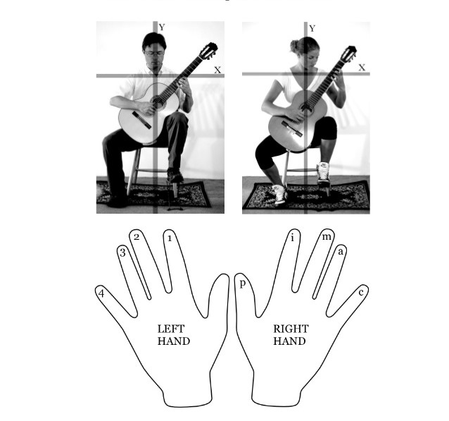

Guitar Lesson
Welcome to the beginner guitar lessons section.Here is where you will find lessons for absolute beginners that are brand new to guitar, as well as some material for brushing up on the fundamentals, if you have some familiarity but are still at the beginner level.
Learning guitar is a lot of fun, and with the right lessons anyone can become a great guitar player. However, to be successful it's important to pick the right learning method and stay focused. You will begin out learning basics like how to hold a guitar, how to hold a guitar pick, how to play simple guitar chords, and how to strum the guitar. To keep things fun, you'll learn by playing simple songs!
Lets Start...
How to hold a guitar
Proper guitar posture is not something every guitar player is aware of or takes seriously.Thats because improper posture and bad habits will not immediately result in injuries.
But over the long term guitar players can get back, shoulder, neck, elbow, arm and wrist pains, RSI (repetitive strain injuries), tendonitis, CTS (Carpal Tunnel Syndrome) and other nasty side effects.
This is certainly not every guitar player's destiny, but it's not out of the question either. But there's good news! Proper posture can prevent a lot of these injuries and it makes guitar playing easier and more pleasant.
So, how to hold guitar in proper way. Let's take a closer look:
What to avoid:

How to hold the guitar pick
Hold the pick so that it comes out of the side of your thumb and hold it with the tip of the 1st finger (see the pictures below). The rest of your hand should just be relaxed. Make sure that the pick is coming out of the side of your thumb - this is by far the most important aspect of the correct position.
Naming the fingers on the guitar.

The right hand fingers are named after the Spanish names for the fingers which are in parentheses below. They are abbreviated with a single letter.
thumb = p (pulgar)
index = i (indice)
middle* = m (mayor or medio)
ring = a (anular)
pinky* = c or s (chiquito)
The left hand fingers are numbered 1 to 4, starting with the index. The thumb is generally not used, however, I list the thumb as T because it is sometimes used in modern tablature for pop songs that way.
thumb = T
index = 1
middle = 2
ring = 3
pinky = 4
no finger or open string = 0
For further more info Click here
Guitar Chords
A Major and Minor chord
A chord variations
B Major and Minor chord
B chord variations
C Major and Minor chord
C chord variations

D Major and Minor chord
D chord variations
E Major and Minor chord
 E chord variations
E chord variations
F Major and Minor chord
F chord variations
G Major and Minor chord
G chord variations
For further more info Click here
Understanding the chords
How to Change Guitar Strings
Changing guitar strings is really not a complicated task, but it is for some reason intimidating to new guitarists. Intimidating or not, it is an easily-acquired skill that any guitarist should have.
Seven step guide to string your guitar
How to tune your guitar
Tuning the guitar is the first thing you need to master on your way to rock stardom. There are multiple ways to tune your guitar. The most common method is using Chromatic guitar tuner. If you dont't have Chromatic tuner, Don't worry! Tuning a guitar is easy nowdays. You can even tune your guitar, using your smartphone via third party guitar tuner app.
Also here is another way to tune your guitar if you don't have any other tools.
How to strum the guitar
It's tough to enjoy playing guitar when it's all rudiments and scales and exercises. Learning to strum a guitar properly will have you playing songs in no time, putting a little fun in your practice. By learning some basic patterns and getting familiar with your guitar, you'll be able to play any song you want.
Here are some tips your can apply to improve your strumming skills.
Keep your wrist loose as you strum up and down from the elbow. It's almost as if you have something stuck on your hand and you're trying to flick it off with a snap of the wrist at the bottom of your strum.
For a lighter sound grip your pick loosely, and for a heavier sound grip it firmer. This increases or decreases the pick's resistance causing the strings to vibrate more or less.
Always maintain an up and down strum motion and simply skip the up or down strokes that aren't needed for the pattern you're playing. This will help you to maintain a steady tempo.
Here are nine of the most common guitar strum patterns.

How to read guitar tabs
Before being able to play any songs, you should be able to read guitar tabs. Guitar tabs aren't a perfect way of describing music, they've allowed newer generations of guitarists to quickly and easily share information about how to play songs across the globe via the internet.
Let's read chord boxes first.

Reading TAB
TAB has six horizontal lines that represent the six strings on the guitar. The top line is the thinnest string (first) and the lowest line represents the thickest (sixth) string. The numbers that are placed on the lines tell you what fret to play a note. You will only ever play the strings with numbers on; If a string has no number, don't play it. The 0 means that a string is played open, with no fingers pressing down the string on the frets.
Scales and Intervals in Guitar
How to find notes on guitar
By now, I guess we have learned quite good idea about holding a guitar, pick, tuning guitar, reading tabs, strumming, basic guitar chords and it's variation, and many more. And now finally time has come to show some skills and play few songs. Without any further ado Let's try few easy songs.
Stand by me - Ben E. King
Can't help falling in love with you - Elvis Presley
Sam Smith - Stay With Me
Let it be - The Beatles
Before you leave, just just have a look at 5 Minutes Basic video. Click Here